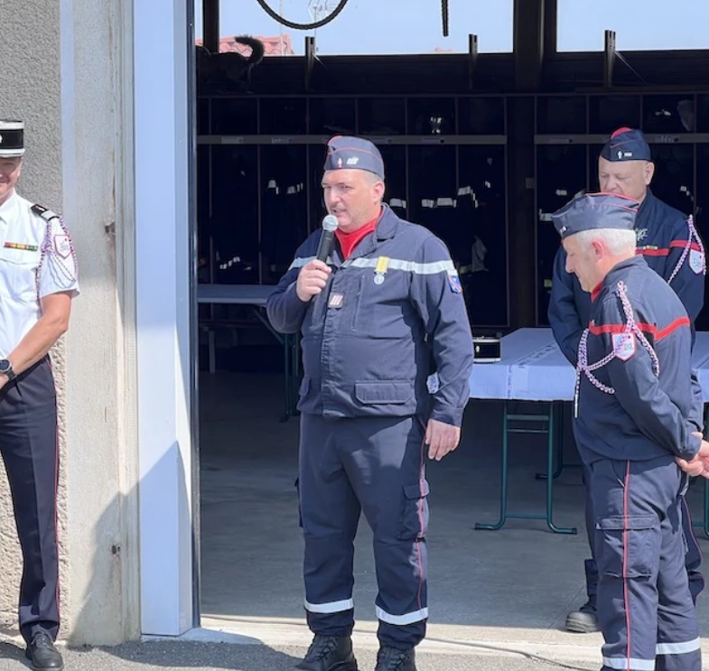
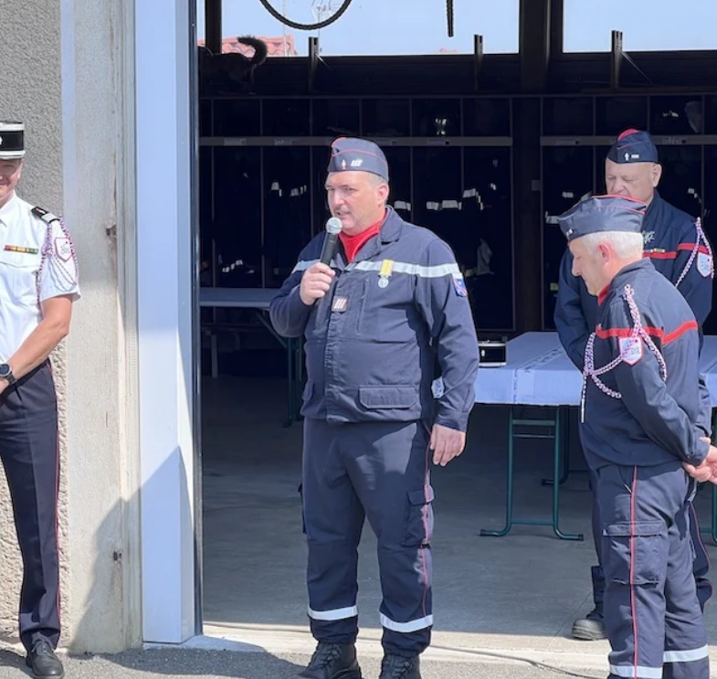

Caserne des Sapeurs-pompiers de Rignieux-le-Franc

3 Véhicules équipent notre caserne:
VPI
Le VPI, Véhicule de Première Intervention, est l'équivalent du FPT (Fourgon Pompe Tonne) dans les CIS (Centre d'Incendie et de Secours). Il est utilisé dans les missions d'extinction de feux de bâtisses ou de brousailles et de balisage d'intervention pour la gestion de la sécurité. Ce véhicule est équipé d'une tonne, reservoir qui dans notre VPI est de 300 litres d'eau. Il possède aussi une pompe permettant l'aspiration et le refoulement d'eau sous pression pour l'utilisation de lance incendie.
VPS
Le VPS, Véhicule de Premiers Secours, est un véhicule scindé en deux. Deux types de missions lui sont attribués. Premièrement, il est l'équivalent du VSAV (Véhicule de Secours et d'Assistance aux Victimes), servant au secours à la personne. Deuxièmement, le VPS est l'équivalent du VTU (Véhicule Tout Usage), servant aux inondations, missions d'élagage, hyménoptères (Gestion de nids d'insectes), LSPCC (Lot de Secours et de Protection Contre les Chutes), bâchage, etc ...
VL
La VL (Véhicule Léger), est un véhicule permettant plusieurs missions et soutien au SLIS (Service Local D'incendie et de Secours). Elle est équipée d'un lot de sacs de secours d'urgence dit de "enième départ", permettant de partir en intervention. Des cônes sont présents pour le balisage des interventions AVP (Accident de la Voie Publique). Les Sapeurs-Pompiers peuvent se rendre en formation à l'aide de ce véhicule.
Galerie photo :


 
